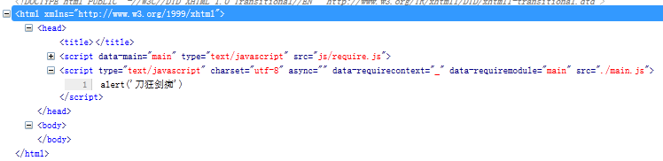

前言
前段时间粗略的扫过一次require.js，当时没怎么在意，结果昨天看到index里面的代码就傻了，完全不知道从哪开始看啦，所以require与backbone的学习还要加紧才行。
由于前端所占业务越来越重，所以出现了模块化编程，但是js加载的先后顺序可能会给我们带来麻烦。
有时候我们为了解决页面堵塞会采用异步加载js的方式，这种方式往往带来了一些不确定因素。
为了解决这些问题，James Burke 便搞了一个AMD（Asynchronous Module Definition 异步模块定义）规范
异步加载模块，模块加载不影响后续语句执行。
我们这里要学习的require.js就是一个实现了AMD的库，他的提出解决了以下问题：
① 实现javascript异步加载，避免页面假死
② 管理模块之间的依赖性，便于代码编写与维护（这是重点啊）
于是我们一起来学习require.js吧
惊鸿一瞥
首先看一看我们的项目文件目录：
我们写下第一段代码：
现在我们的js就需要一个像C语音的main函数，所以我在htm目录再建一个main.js吧
1 <html xmlns="http://www.w3.org/1999/xhtml"> 2 <head> 3 <title></title> 4 <script src="js/require.js" type="text/javascript" data-main="main"></script> 5 </head> 6 <body> 7 </body> 8 </html>
这样我们就成了一个require项目啦。。。需要注意的是这里的
data-main="main"
main指的就是main.js,这个main就是我们传说中的入口函数了。
我先随便在main中写点东西：
alert('刀狂剑痴')
最后我们看看我们的页面：

我们看到他自己引入了main.js，而且是异步的，不会出现阻塞哦。
现在我们换个写法：
1 /// <reference path="js/require.js" /> 2 /// <reference path="js/jquery.js" /> 3 4 require.config({ 5 paths: { 6 jquery: 'js/jquery', 7 test: 'js/test' 8 } 9 }); 10 11 require(['jquery', 'test'], function ($) { 12 alert($().jquery);//打印版本号 13 });
因为我们js文件与htm不是一个目录，所以前面path就在设置目录了，这里首先会加载jquery然后加载我们自定义的test.js。
我们也可以这样写：
1 require.config({ 2 // paths: { 3 // jquery: 'js/jquery', 4 // test: 'js/test' 5 // }, 6 baseUrl: 'js' 7 }); 8 9 require(['jquery', 'test'], function ($) { 10 alert($().jquery);//打印版本号 11 });
反正最后我们完成了第一个例子，现在我们来阶段总结一番：
【阶段总结】
① main使用了config与require，config用于配制一些基本参数，常用：path、baseUrl
② require第一个参数为数组，数组项目为模块名，他们会依次加载，是有一定顺序的
小小实战接触define
我们这里来搞一个测试，原来不是写了一个图片延迟加载的东东么，我们使用require来试试：
HTML结构：


1 <html xmlns="http://www.w3.org/1999/xhtml"> 2 <head> 3 <title></title> 4 <style> 5 img { min-height: 100px; min-width: 100px; border: 1px solid gray; padding: 1px; margin: 10px; } 6 #con { width: 600px; height: 400px; overflow: auto; } 7 </style> 8 </head> 9 <body> 10 <div id="con"> 11 <img src="http://images.cnitblog.com/blog/294743/201306/06135832-3df80351f11d4eb7a701e69ddcfca7aa.png" lazy-src="http://t0.gstatic.com/images?q=tbn:ANd9GcQeA7IcDOwfPFo9jkqGY6z7_x8QvbRhKISjz_mBbHpzibsFHRU4aQ"><img 12 src="http://images.cnitblog.com/blog/294743/201306/06135832-3df80351f11d4eb7a701e69ddcfca7aa.png" lazy-src="http://t0.gstatic.com/images?q=tbn:ANd9GcQ0675UvBjhuBSL2reu9MNtbD2gsyhXfKHff4rWoeWTl9s6tBtT"><img 13 src="http://images.cnitblog.com/blog/294743/201306/06135832-3df80351f11d4eb7a701e69ddcfca7aa.png" lazy-src="http://t0.gstatic.com/images?q=tbn:ANd9GcT5fFjlkPbN6HyDdFH-ABGFv1KFf0Z-GLQjauUkYDnU6BLlJWlR"><img 14 src="http://images.cnitblog.com/blog/294743/201306/06135832-3df80351f11d4eb7a701e69ddcfca7aa.png" lazy-src="http://t0.gstatic.com/images?q=tbn:ANd9GcQgCYMj83ZKBreRc6Eo7M83nBuvBH7a8OoD50gy0kjcXt_MrdES"><img 15 src="http://images.cnitblog.com/blog/294743/201306/06135832-3df80351f11d4eb7a701e69ddcfca7aa.png" lazy-src="http://t2.gstatic.com/images?q=tbn:ANd9GcQaRBgWXVLp_jZsOja2CTwvUtvGY0kpbukMuoHVt4aOVt-bQAQTaA"><img 16 src="http://images.cnitblog.com/blog/294743/201306/06135832-3df80351f11d4eb7a701e69ddcfca7aa.png" lazy-src="http://t0.gstatic.com/images?q=tbn:ANd9GcT4QFYpMjmUg-ojALNGHZi1deHhima5XCg22_2vEGPfG1ii65kA"><img 17 src="http://images.cnitblog.com/blog/294743/201306/06135832-3df80351f11d4eb7a701e69ddcfca7aa.png" lazy-src="http://t0.gstatic.com/images?q=tbn:ANd9GcRYsKunQTWsOI_fivyDvl2ODIi-nVmmLC5hUMN0Gwn8rfExmoil"><img 18 src="http://images.cnitblog.com/blog/294743/201306/06135832-3df80351f11d4eb7a701e69ddcfca7aa.png" lazy-src="http://t2.gstatic.com/images?q=tbn:ANd9GcSNjna95u1rkQeIIzUZt4e-ig-cQVL3zlDF52Ahy0CG6RiIYPl-"><img 19 src="http://images.cnitblog.com/blog/294743/201306/06135832-3df80351f11d4eb7a701e69ddcfca7aa.png" lazy-src="http://t2.gstatic.com/images?q=tbn:ANd9GcRhfmowfsxnOPE2h1eFzVde_cdbMXuco-3n0hU5CaMcWDo68fb0Ww"><img 20 src="http://images.cnitblog.com/blog/294743/201306/06135832-3df80351f11d4eb7a701e69ddcfca7aa.png" lazy-src="http://t1.gstatic.com/images?q=tbn:ANd9GcTKg-uX2br5cEY0CgW9BrQBSvcu_wTMldPDmCjAXgU-Mom3qOPQ"><img 21 src="http://images.cnitblog.com/blog/294743/201306/06135832-3df80351f11d4eb7a701e69ddcfca7aa.png" lazy-src="http://t1.gstatic.com/images?q=tbn:ANd9GcRJ1Y9ok2h6msyQgVDZ2yxEpEALNYQ9zLH3oO4rAcbuS6Q36Kg33w"><img 22 src="http://images.cnitblog.com/blog/294743/201306/06135832-3df80351f11d4eb7a701e69ddcfca7aa.png" lazy-src="http://t3.gstatic.com/images?q=tbn:ANd9GcQfzRcM1gOeqzKim5v7tjRYgR5vKFYmMq7Okeiqx2Eptod7CczB"><img 23 src="http://images.cnitblog.com/blog/294743/201306/06135832-3df80351f11d4eb7a701e69ddcfca7aa.png" lazy-src="http://t1.gstatic.com/images?q=tbn:ANd9GcQ7352IR-71m2lD8yO-E-b6N1MtSSX3SXnSNYrPiqhVc2DCuxQunQ"><img 24 src="http://images.cnitblog.com/blog/294743/201306/06135832-3df80351f11d4eb7a701e69ddcfca7aa.png" lazy-src="http://t0.gstatic.com/images?q=tbn:ANd9GcSouivtDehuJmrKQ3QNJh9THm6XabMl8bIJ_-EphoVsiQYUwkN3"><img 25 src="http://images.cnitblog.com/blog/294743/201306/06135832-3df80351f11d4eb7a701e69ddcfca7aa.png" lazy-src="http://t2.gstatic.com/images?q=tbn:ANd9GcQXnAMu3mNTPSC3wLZx_8qkHF0u1k5u21l3_p2U2mDPrf4GkqWv-g"><img 26 src="http://images.cnitblog.com/blog/294743/201306/06135832-3df80351f11d4eb7a701e69ddcfca7aa.png" lazy-src="http://t0.gstatic.com/images?q=tbn:ANd9GcRxXxuf9a_mca-dBpxPIazHGZh8qZS36cN_eTYJMnBSDIczSFboyw"><img 27 src="http://images.cnitblog.com/blog/294743/201306/06135832-3df80351f11d4eb7a701e69ddcfca7aa.png" lazy-src="http://t0.gstatic.com/images?q=tbn:ANd9GcSLJ_POtfB-QCh98uMwl_2RjyKFnMF4uBAFYZoTobd0qghzNKav"><img 28 src="http://images.cnitblog.com/blog/294743/201306/06135832-3df80351f11d4eb7a701e69ddcfca7aa.png" lazy-src="http://t3.gstatic.com/images?q=tbn:ANd9GcTOUW0fs-Y9VDf5hMPkhBj7ElNyIFn0CCcwKrpWwDOyfqGAuhgx"><img 29 src="http://images.cnitblog.com/blog/294743/201306/06135832-3df80351f11d4eb7a701e69ddcfca7aa.png" lazy-src="http://t2.gstatic.com/images?q=tbn:ANd9GcTHyfvCdXrPeeD4Q020IA7L5dTBj71ZFlaqPSdUwWVua90IIEIe"><img 30 src="http://images.cnitblog.com/blog/294743/201306/06135832-3df80351f11d4eb7a701e69ddcfca7aa.png" lazy-src="http://t0.gstatic.com/images?q=tbn:ANd9GcTgtSEb3lTAgMNKOhVtESFeXYmdyQs-Qtol6qaNxKgOfXCorc_n2w"><img 31 src="http://images.cnitblog.com/blog/294743/201306/06135832-3df80351f11d4eb7a701e69ddcfca7aa.png" lazy-src="http://t2.gstatic.com/images?q=tbn:ANd9GcT7yTxBO1cgnOMhZPGTTz8qnWybHBy7KKPgi3LPwXLwUpx4jOa1"><img 32 src="http://images.cnitblog.com/blog/294743/201306/06135832-3df80351f11d4eb7a701e69ddcfca7aa.png" lazy-src="http://t0.gstatic.com/images?q=tbn:ANd9GcRyueSS4jvdD3KL0RRA1_gjWs1t_SYXjz3scpEtZLfaU81jM6LY"><img 33 src="http://images.cnitblog.com/blog/294743/201306/06135832-3df80351f11d4eb7a701e69ddcfca7aa.png" lazy-src="http://t2.gstatic.com/images?q=tbn:ANd9GcQcHBwxi0TOcT4Qq12l5C3qTpNk1FxufGXThU9TzobI6gtjLuuh"><img 34 src="http://images.cnitblog.com/blog/294743/201306/06135832-3df80351f11d4eb7a701e69ddcfca7aa.png" lazy-src="http://t0.gstatic.com/images?q=tbn:ANd9GcQh9QHMSyHhz_qClSm52oSArs0PHD79Fu3tJFkK5XUmPxb1s92W"><img 35 src="http://images.cnitblog.com/blog/294743/201306/06135832-3df80351f11d4eb7a701e69ddcfca7aa.png" lazy-src="http://t3.gstatic.com/images?q=tbn:ANd9GcTZ0sffw1KlEzasC_BJG2lC3FlEqhcoRUFNi1izZfihFLu1TYZy"><img 36 src="http://images.cnitblog.com/blog/294743/201306/06135832-3df80351f11d4eb7a701e69ddcfca7aa.png" lazy-src="http://t3.gstatic.com/images?q=tbn:ANd9GcRBX1qNvA_hdOyQ9d8YSxtXX8NJR8i0psiXRhGPcmBWof8Mbo8iCw"><img 37 src="http://images.cnitblog.com/blog/294743/201306/06135832-3df80351f11d4eb7a701e69ddcfca7aa.png" lazy-src="http://t3.gstatic.com/images?q=tbn:ANd9GcTcb5tgRiVigR0qBayAJ5CFpTD79tevc4BvQpbTo2B9J9BE1uluHw"><img 38 src="http://images.cnitblog.com/blog/294743/201306/06135832-3df80351f11d4eb7a701e69ddcfca7aa.png" lazy-src="http://t1.gstatic.com/images?q=tbn:ANd9GcRaScH10Znz-gGpDQZuPcW9wf8sUH0r6fIbQNWQyCQ5jEt_Dsrotg"><img 39 src="http://images.cnitblog.com/blog/294743/201306/06135832-3df80351f11d4eb7a701e69ddcfca7aa.png" lazy-src="http://t3.gstatic.com/images?q=tbn:ANd9GcQLhXHVnYBKDfWxyQbX2gmmnv2YOUeapwMgC5MQBxpOMCulCsGntw"><img 40 src="http://images.cnitblog.com/blog/294743/201306/06135832-3df80351f11d4eb7a701e69ddcfca7aa.png" lazy-src="http://t3.gstatic.com/images?q=tbn:ANd9GcSHnShgQRvdXGduPbZFmil3u9WaMtzQ83bSmbwNzZumXivi0fKz"><img 41 src="http://images.cnitblog.com/blog/294743/201306/06135832-3df80351f11d4eb7a701e69ddcfca7aa.png" lazy-src="http://t3.gstatic.com/images?q=tbn:ANd9GcS-2GvOWqaOjed6WQusocYWIfeuPxgfIsi_I3J3B8ION4NahWNd4g"><img 42 src="http://images.cnitblog.com/blog/294743/201306/06135832-3df80351f11d4eb7a701e69ddcfca7aa.png" lazy-src="http://t3.gstatic.com/images?q=tbn:ANd9GcSR6Y5P-0zcPKWz0TOyKa-mYusyKXU8RLx8jwCKhoZ8j3VZaTq-"><img 43 src="http://images.cnitblog.com/blog/294743/201306/06135832-3df80351f11d4eb7a701e69ddcfca7aa.png" lazy-src="http://t0.gstatic.com/images?q=tbn:ANd9GcQelQTt105pzmvK_yrjy2AXyWhnLPCuCEtUeO13V1119xe9whKA"><img 44 src="http://images.cnitblog.com/blog/294743/201306/06135832-3df80351f11d4eb7a701e69ddcfca7aa.png" lazy-src="http://t1.gstatic.com/images?q=tbn:ANd9GcR2TYDtbatDPKnor_I91SlVFxqJsRaXShVgWC0s3iTx22uMjB8T"><img 45 src="http://images.cnitblog.com/blog/294743/201306/06135832-3df80351f11d4eb7a701e69ddcfca7aa.png" lazy-src="http://t0.gstatic.com/images?q=tbn:ANd9GcQ_A96SHx2bQi5T9rFftdeEl7jsuu7fM8Kj47d-rekkf4S9a2HX"><img 46 src="http://images.cnitblog.com/blog/294743/201306/06135832-3df80351f11d4eb7a701e69ddcfca7aa.png" lazy-src="http://t2.gstatic.com/images?q=tbn:ANd9GcQ3DCK9OcuvYUbiG1AnLTmMMuADsWXraPsegkMZu8OGeNy6GThk"><img 47 src="http://images.cnitblog.com/blog/294743/201306/06135832-3df80351f11d4eb7a701e69ddcfca7aa.png" lazy-src="http://t0.gstatic.com/images?q=tbn:ANd9GcRvcDRTnNqMKtsOysJSYrzqMdC_NC5Q5t0iB84IPy6gN8Nz93XI"><img 48 src="http://images.cnitblog.com/blog/294743/201306/06135832-3df80351f11d4eb7a701e69ddcfca7aa.png" lazy-src="http://t1.gstatic.com/images?q=tbn:ANd9GcTUVomS-U4Guzmvom6pG-8SmDcnL0anyD3x2WWrxPy51uY6wkUcrw"><img 49 src="http://images.cnitblog.com/blog/294743/201306/06135832-3df80351f11d4eb7a701e69ddcfca7aa.png" lazy-src="http://t3.gstatic.com/images?q=tbn:ANd9GcRS77pydsLeKDekA8sTr7gJMJakN_l42TMGCBt5AK5GRuId2W61TA"><img 50 src="http://images.cnitblog.com/blog/294743/201306/06135832-3df80351f11d4eb7a701e69ddcfca7aa.png" lazy-src="http://t0.gstatic.com/images?q=tbn:ANd9GcSc1O1OYU8HkTUKXzUADyc5OU3AwTi74f-OXEHAHlKzo-QWhvzMDQ"><img 51 src="http://images.cnitblog.com/blog/294743/201306/06135832-3df80351f11d4eb7a701e69ddcfca7aa.png" lazy-src="http://t2.gstatic.com/images?q=tbn:ANd9GcTqFcZfLgjLCnwZGa5gicji9pPjbbJo5vdc3Ktmb1c5o-ied6wSJg"><img 52 src="http://images.cnitblog.com/blog/294743/201306/06135832-3df80351f11d4eb7a701e69ddcfca7aa.png" lazy-src="http://t2.gstatic.com/images?q=tbn:ANd9GcTiIa88meODgGZa3FujShj-84aJ1T1MYnMq04WB6aW9limmIVJMNQ"><img 53 src="http://images.cnitblog.com/blog/294743/201306/06135832-3df80351f11d4eb7a701e69ddcfca7aa.png" lazy-src="http://t3.gstatic.com/images?q=tbn:ANd9GcTwjG00KVvctaJUvTNZ0QBww7ioYRELKvKGOseddZiby4HCcAdByg"><img 54 src="http://images.cnitblog.com/blog/294743/201306/06135832-3df80351f11d4eb7a701e69ddcfca7aa.png" lazy-src="http://t3.gstatic.com/images?q=tbn:ANd9GcTDSV9OzhZMfsAHdMX2aqxVsy2KcjwHfNuv56YkRnLxWShCi27b"><img 55 src="http://images.cnitblog.com/blog/294743/201306/06135832-3df80351f11d4eb7a701e69ddcfca7aa.png" lazy-src="http://t3.gstatic.com/images?q=tbn:ANd9GcQ94MVzNxNF4mQVNNFXSvSt2muXooVcAk1D4IUmVIpBJl_9ZTY4cQ"><img 56 src="http://images.cnitblog.com/blog/294743/201306/06135832-3df80351f11d4eb7a701e69ddcfca7aa.png" lazy-src="http://t2.gstatic.com/images?q=tbn:ANd9GcT6aSnAUDzkXWruDZWYIGIl7Ikst2Dov1O5FfQGrUfJxMEMMaz_"><img 57 src="http://images.cnitblog.com/blog/294743/201306/06135832-3df80351f11d4eb7a701e69ddcfca7aa.png" lazy-src="http://t2.gstatic.com/images?q=tbn:ANd9GcT6nPA8A0iLsPl2fHH7W0cOuCvJnA1neUKDkg-vlrr_yH2U1Cpvp1fufBmP"><img 58 src="http://images.cnitblog.com/blog/294743/201306/06135832-3df80351f11d4eb7a701e69ddcfca7aa.png" lazy-src="http://t3.gstatic.com/images?q=tbn:ANd9GcTGQ7xTXdxehbb4SX094U2giAEzX8IOk8tMuibYB-2azPCIB2Wi1Q"><img 59 src="http://images.cnitblog.com/blog/294743/201306/06135832-3df80351f11d4eb7a701e69ddcfca7aa.png" lazy-src="http://t1.gstatic.com/images?q=tbn:ANd9GcTD-f2XxNcbfKTyQlpqYVdpCDt0z81BCqejXVw9V4XIn9SE-eQ77w"><img 60 src="http://images.cnitblog.com/blog/294743/201306/06135832-3df80351f11d4eb7a701e69ddcfca7aa.png" lazy-src="http://t1.gstatic.com/images?q=tbn:ANd9GcT_3jasordROFjB9IBvnHe9cL46DHDHDyJDJySi-g-bu1jA2H7f"><img 61 src="http://images.cnitblog.com/blog/294743/201306/06135832-3df80351f11d4eb7a701e69ddcfca7aa.png" lazy-src="http://t1.gstatic.com/images?q=tbn:ANd9GcQSOTVBnsLGlHNC2Al7NquIAy0r3zcLXAF__UZTp-QSzBJMduEs"><img 62 src="http://images.cnitblog.com/blog/294743/201306/06135832-3df80351f11d4eb7a701e69ddcfca7aa.png" lazy-src="http://t2.gstatic.com/images?q=tbn:ANd9GcTCDCCh2p7_QrY1Y3CnFh7PMi9osBRtmATk1YzXd9qLrD8ZBJtt8g"><img 63 src="http://images.cnitblog.com/blog/294743/201306/06135832-3df80351f11d4eb7a701e69ddcfca7aa.png" lazy-src="http://t2.gstatic.com/images?q=tbn:ANd9GcQ1gcyhJgqz35t2LOERYe03F0uFe2VDLiQR-MrjODoidcOXhgwk"><img 64 src="http://images.cnitblog.com/blog/294743/201306/06135832-3df80351f11d4eb7a701e69ddcfca7aa.png" lazy-src="http://t3.gstatic.com/images?q=tbn:ANd9GcR38iRko3Y5E0tI7YepiepfyGZAZulSvtaYFkRbxJ2X59-gBzIX"><img 65 src="http://images.cnitblog.com/blog/294743/201306/06135832-3df80351f11d4eb7a701e69ddcfca7aa.png" lazy-src="http://t1.gstatic.com/images?q=tbn:ANd9GcR0a4-W7f25CEcMqhAY_76VwFQFsRdOBCTMBinrhuOmdzAOzjNM"><img 66 src="http://images.cnitblog.com/blog/294743/201306/06135832-3df80351f11d4eb7a701e69ddcfca7aa.png" lazy-src="http://t3.gstatic.com/images?q=tbn:ANd9GcSx9lIYUcNC6Uw6P183m17EGKLAlrn2ydq7e78mC2jNfhEeQTIiGQ"><img 67 src="http://images.cnitblog.com/blog/294743/201306/06135832-3df80351f11d4eb7a701e69ddcfca7aa.png" lazy-src="http://t0.gstatic.com/images?q=tbn:ANd9GcTyBUvV-QlkOQyUJmGEgutJzt5psfFdFD057helEC87Xcg-AG5B"><img 68 src="http://images.cnitblog.com/blog/294743/201306/06135832-3df80351f11d4eb7a701e69ddcfca7aa.png" lazy-src="http://t0.gstatic.com/images?q=tbn:ANd9GcTR4QMBicgPpp6Egk5wydx_BLQucGV6jn_WeiFdVriF60QMT9Le"><img 69 src="http://images.cnitblog.com/blog/294743/201306/06135832-3df80351f11d4eb7a701e69ddcfca7aa.png" lazy-src="http://t2.gstatic.com/images?q=tbn:ANd9GcSPeBHuvVsJioGCvsHN3djDYUHkTSJUX0ScGuO4VdmYzGBgymdoNw"><img 70 src="http://images.cnitblog.com/blog/294743/201306/06135832-3df80351f11d4eb7a701e69ddcfca7aa.png" lazy-src="http://t3.gstatic.com/images?q=tbn:ANd9GcRiGpcV-N7xYtszT6gxoeHHYzltVQGfUWsWHggiU_777pwjdzqJ"><img 71 src="http://images.cnitblog.com/blog/294743/201306/06135832-3df80351f11d4eb7a701e69ddcfca7aa.png" lazy-src="http://t2.gstatic.com/images?q=tbn:ANd9GcQ7cLJuBBcrbCY3Km9WIlor8dYz1gegOeNaPVqtanPdWPuOQv-xHw"><img 72 src="http://images.cnitblog.com/blog/294743/201306/06135832-3df80351f11d4eb7a701e69ddcfca7aa.png" lazy-src="http://t3.gstatic.com/images?q=tbn:ANd9GcSXwpsNg5wTvLtLuEukc_MHK-l-lz378nrq82WThURBhap55GHpsQ"><img 73 src="http://images.cnitblog.com/blog/294743/201306/06135832-3df80351f11d4eb7a701e69ddcfca7aa.png" lazy-src="http://t3.gstatic.com/images?q=tbn:ANd9GcR65Z_S0Eg0k3x_bNi7xZVY5LnArt8zi_-08mCDJynFKhw_V8KWMA"><img 74 src="http://images.cnitblog.com/blog/294743/201306/06135832-3df80351f11d4eb7a701e69ddcfca7aa.png" lazy-src="http://t3.gstatic.com/images?q=tbn:ANd9GcSQEFH9BT-cHykSaHJUSvGbn9KHEmjeUJusIgBnLRZb-A6XaWpJ1A"><img 75 src="http://images.cnitblog.com/blog/294743/201306/06135832-3df80351f11d4eb7a701e69ddcfca7aa.png" lazy-src="http://t0.gstatic.com/images?q=tbn:ANd9GcQiuTGk8qE2WKeSuxPk48QVoCkw0bSVmE1kA8StS2j7B5nSGm_x"><img 76 src="http://images.cnitblog.com/blog/294743/201306/06135832-3df80351f11d4eb7a701e69ddcfca7aa.png" lazy-src="http://t2.gstatic.com/images?q=tbn:ANd9GcSmmPUnkYwObYg7p2BW3JjnDucW-0DEk7FFFYSwmEoI7oio3WZx"><img 77 src="http://images.cnitblog.com/blog/294743/201306/06135832-3df80351f11d4eb7a701e69ddcfca7aa.png" lazy-src="http://t2.gstatic.com/images?q=tbn:ANd9GcTXyl_Rcz3T2sM_IvauMA7Fj_ymV81eEAg2OHTx6R_cPDxtUCOc"><img 78 src="http://images.cnitblog.com/blog/294743/201306/06135832-3df80351f11d4eb7a701e69ddcfca7aa.png" lazy-src="http://t2.gstatic.com/images?q=tbn:ANd9GcTn5SlTHwQQ7Srl1hpzLuhjNPS4KK7P4FLUpKWCEgqT6Ade9dr9wQ"><img 79 src="http://images.cnitblog.com/blog/294743/201306/06135832-3df80351f11d4eb7a701e69ddcfca7aa.png" lazy-src="http://t2.gstatic.com/images?q=tbn:ANd9GcTl_DOFBO9A6aM3pnKI2Phk1WFGgMpKOF-IEWZooAc2STSuXdux"><img 80 src="http://images.cnitblog.com/blog/294743/201306/06135832-3df80351f11d4eb7a701e69ddcfca7aa.png" lazy-src="http://t1.gstatic.com/images?q=tbn:ANd9GcSs6I2i44EO0fisjBDWgqiT6REPIZnXoGgX5W_Pz8SYgDk5Flqu"><img 81 src="http://images.cnitblog.com/blog/294743/201306/06135832-3df80351f11d4eb7a701e69ddcfca7aa.png" lazy-src="http://t2.gstatic.com/images?q=tbn:ANd9GcRhJJI92CsLtzgb_0HITayU9fIQlnec_bzKVJxqiCzgsOYCkjHuKA"><img 82 src="http://images.cnitblog.com/blog/294743/201306/06135832-3df80351f11d4eb7a701e69ddcfca7aa.png" lazy-src="http://t1.gstatic.com/images?q=tbn:ANd9GcRtGEcXY778tAjvnhJ__nu4zpF3QLMsQkxmEUDjTBlcLFxAzwtL"><img 83 src="http://images.cnitblog.com/blog/294743/201306/06135832-3df80351f11d4eb7a701e69ddcfca7aa.png" lazy-src="http://t3.gstatic.com/images?q=tbn:ANd9GcS_-MsXrXo55ERoAbg3W5QWH-mkPgcjW_cxVeXv74nCoQ4MPsmT"><img 84 src="http://images.cnitblog.com/blog/294743/201306/06135832-3df80351f11d4eb7a701e69ddcfca7aa.png" lazy-src="http://t2.gstatic.com/images?q=tbn:ANd9GcQEocE8m_VLuFzbuyVZusMGS9iU4Pvfimrp9HLLzXy9B8oZ_GtD"><img 85 src="http://images.cnitblog.com/blog/294743/201306/06135832-3df80351f11d4eb7a701e69ddcfca7aa.png" lazy-src="http://t0.gstatic.com/images?q=tbn:ANd9GcRZiTczfYDzdQzPSo9kVN7_tFTz9MEPshs74lk4hxQOnrpS-lCB"><img 86 src="http://images.cnitblog.com/blog/294743/201306/06135832-3df80351f11d4eb7a701e69ddcfca7aa.png" lazy-src="http://t3.gstatic.com/images?q=tbn:ANd9GcSDSQ7C0C4fz91OfBaNnLUp5B9N92cIQH1FODxHfzVXqXEv6YAKww"><img 87 src="http://images.cnitblog.com/blog/294743/201306/06135832-3df80351f11d4eb7a701e69ddcfca7aa.png" lazy-src="http://t2.gstatic.com/images?q=tbn:ANd9GcQVlLoeddH-avr0CIKFNn6i1lVR-lVJkLxZ6IzlB-uTdoCI_XgVLg"><img 88 src="http://images.cnitblog.com/blog/294743/201306/06135832-3df80351f11d4eb7a701e69ddcfca7aa.png" lazy-src="http://t3.gstatic.com/images?q=tbn:ANd9GcTDuNZrC1K-Xfb0AJXfrLhZP3r-enBcGh--6MYAwjle9GWHDdcN"><img 89 src="http://images.cnitblog.com/blog/294743/201306/06135832-3df80351f11d4eb7a701e69ddcfca7aa.png" lazy-src="http://t0.gstatic.com/images?q=tbn:ANd9GcSPW0FEG1cFEzu5X2J-dHIBPeOP3o5-po2QN4JXlnzcMVCAiCdU"><img 90 src="http://images.cnitblog.com/blog/294743/201306/06135832-3df80351f11d4eb7a701e69ddcfca7aa.png" lazy-src="http://t0.gstatic.com/images?q=tbn:ANd9GcRmL2w4FgQoo0ocQcuGR-OVkQDYFbPFF1WM1ohOJy8CdcZa1mbTZw"><img 91 src="http://images.cnitblog.com/blog/294743/201306/06135832-3df80351f11d4eb7a701e69ddcfca7aa.png" lazy-src="http://t0.gstatic.com/images?q=tbn:ANd9GcQ5mkoQqjiE9IjbjD2Pq3ezHqNF6YAdFaV3jRhUtfZuiInbHxAo3Q"><img 92 src="http://images.cnitblog.com/blog/294743/201306/06135832-3df80351f11d4eb7a701e69ddcfca7aa.png" lazy-src="http://t3.gstatic.com/images?q=tbn:ANd9GcQg-A4WM5vY_1RwVVlYsEi3KDwf7bBdZIK4YiuPh0zIkWBdoUf25Q"> 93 </div> 94 <script src="js/require.js" type="text/javascript" data-main="main"></script> 95 </body> 96 </html>
核心代码：
<script src="js/require.js" type="text/javascript" data-main="main"></script>
main代码：
1 require.config({ 2 baseUrl: 'js' 3 }); 4 5 require(['jquery', 'test'], function ($, imgLazyLoad) { 6 imgLazyLoad($('#con')); //图片延迟加载 7 });
test.js：
1 define(function () { 2 function imgLazyLoad(container) { 3 var imgLazyLoadTimer = null; 4 var resetImglazy = null; 5 container = container || $(window); //需要时jquery对象 6 var imgArr = {}; 7 initImg(); 8 lazyLoad(); 9 autoLoad(); 10 container.scroll(function () { 11 lazyLoad(); 12 }); 13 $(window).resize(function () { 14 initImg(); 15 }); 16 $(document).mousemove(function () { 17 clearTimeout(imgLazyLoadTimer); 18 if (resetImglazy) clearTimeout(resetImglazy); 19 resetImglazy = setTimeout(function () { 20 autoLoad(); 21 }, 5000); 22 }); 23 function initImg() { 24 $('img').each(function () { 25 var el = $(this); 26 if (el.attr('lazy-src') && el.attr('lazy-src') != '') { 27 var offset = el.offset(); 28 if (!imgArr[offset.top]) { 29 imgArr[offset.top] = []; 30 } 31 imgArr[offset.top].push(el); 32 } 33 }); 34 } 35 function lazyLoad() { 36 var height = container.height(); 37 var srollHeight = container.scrollTop(); 38 for (var k in imgArr) { 39 if (parseInt(k) < srollHeight + height) { 40 var _imgs = imgArr[k]; 41 for (var i = 0, len = _imgs.length; i < len; i++) { 42 var tmpImg = _imgs[i]; 43 if (tmpImg.attr('lazy-src') && tmpImg.attr('lazy-src') != '') { 44 tmpImg.attr('src', tmpImg.attr('lazy-src')); 45 tmpImg.removeAttr('lazy-src'); 46 } 47 } 48 delete imgArr[k]; 49 } 50 } 51 } //lazyLoad 52 function autoLoad() { 53 var _key = null; 54 for (var k in imgArr) { 55 if (!_key) { 56 _key = k; 57 break; 58 } 59 } 60 var _imgs = imgArr[_key]; 61 for (var i = 0, len = _imgs.length; i < len; i++) { 62 var tmpImg = _imgs[i]; 63 if (tmpImg.attr('lazy-src') && tmpImg.attr('lazy-src') != '') { 64 tmpImg.attr('src', tmpImg.attr('lazy-src')); 65 tmpImg.removeAttr('lazy-src'); 66 } 67 } 68 delete imgArr[_key]; 69 if (imgLazyLoadTimer) { 70 clearTimeout(imgLazyLoadTimer); 71 } 72 imgLazyLoadTimer = setTimeout(autoLoad, 3000); 73 } 74 } //imgLazyLoad 75 return imgLazyLoad; 76 });
演示地址，效果类似而已
{kind=link}
【阶段总结】
这里我们使用了一个新的东西：define
define的参数是一匿名函数，他会有一个返回值，我这里直接返回了函数本身，然后在回调函数中调用之。
我们可以在define中定义一个对象然后返回对象名那么用法就更多了
补充
刚刚看到了一个shim，于是我们这里简单补充一下吧
1 shim: { 2 $: { 3 exports: 'jQuery' 4 }, 5 _: { 6 exports: '_' 7 }, 8 B: { 9 deps: [ 10 '_', 11 '$' 12 ], 13 exports: 'Backbone' 14 } 15 },
shim参数用于解决使用非AMD定义的模块载入顺序问题。
PS：这个是神马意思，我还没完全理解，大概是使用jquery插件时候需要先保证jquery下载才行吧？这里后面再补充。
需要翻译的地方
Supported configuration options:
baseUrl: the root path to use for all module lookups. So in the above example, "my/module"'s script tag will have a src="/another/path/my/module.js". baseUrl is notused when loading plain .js files (indicated by a dependency string starting with a slash, has a protocol, or ends in .js), those strings are used as-is, so a.js and b.js will be loaded from the same directory as the HTML page that contains the above snippet.
If no baseUrl is explicitly set in the configuration, the default value will be the location of the HTML page that loads require.js. If a data-main attribute is used, that path will become the baseUrl.
The baseUrl can be a URL on a different domain as the page that will load require.js. RequireJS script loading works across domains. The only restriction is on text content loaded by text! plugins: those paths should be on the same domain as the page, at least during development. The optimization tool will inline text! plugin resources so after using the optimization tool, you can use resources that reference text! plugin resources from another domain.
paths: path mappings for module names not found directly under baseUrl. The path settings are assumed to be relative to baseUrl, unless the paths setting starts with a "/" or has a URL protocol in it ("like http:"). Using the above sample config, "some/module"'s script tag will be src="/another/path/some/v1.0/module.js".
The path that is used for a module name should not include an extension, since the path mapping could be for a directory. The path mapping code will automatically add the .js extension when mapping the module name to a path. If require.toUrl() is used, it will add the appropriate extension, if it is for something like a text template.
When run in a browser, paths fallbacks can be specified, to allow trying a load from a CDN location, but falling back to a local location if the CDN location fails to load.
shim: Configure the dependencies, exports, and custom initialization for older, traditional "browser globals" scripts that do not use define() to declare the dependencies and set a module value.
Here is an example. It requires RequireJS 2.1.0+, and assumes backbone.js, underscore.js and jquery.js have been installed in the baseUrl directory. If not, then you may need to set a paths config for them:
requirejs.config({
//Remember: only use shim config for non-AMD scripts,
//scripts that do not already call define(). The shim
//config will not work correctly if used on AMD scripts,
//in particular, the exports and init config will not
//be triggered, and the deps config will be confusing
//for those cases.
shim: {
'backbone': {
//These script dependencies should be loaded before loading
//backbone.js
deps: ['underscore', 'jquery'],
//Once loaded, use the global 'Backbone' as the
//module value.
exports: 'Backbone'
},
'underscore': {
exports: '_'
},
'foo': {
deps: ['bar'],
exports: 'Foo',
init: function (bar) {
//Using a function allows you to call noConflict for
//libraries that support it, and do other cleanup.
//However, plugins for those libraries may still want
//a global. "this" for the function will be the global
//object. The dependencies will be passed in as
//function arguments. If this function returns a value,
//then that value is used as the module export value
//instead of the object found via the 'exports' string.
//Note: jQuery registers as an AMD module via define(),
//so this will not work for jQuery. See notes section
//below for an approach for jQuery.
return this.Foo.noConflict();
}
}
}
});
//Then, later in a separate file, call it 'MyModel.js', a module is
//defined, specifying 'backbone' as a dependency. RequireJS will use
//the shim config to properly load 'backbone' and give a local
//reference to this module. The global Backbone will still exist on
//the page too.
define(['backbone'], function (Backbone) {
return Backbone.Model.extend({});
});
In RequireJS 2.0.*, the "exports" property in the shim config could have been a function instead of a string. In that case, it functioned the same as the "init" property as shown above. The "init" pattern is used in RequireJS 2.1.0+ so a string value for exports can be used forenforceDefine, but then allow functional work once the library is known to have loaded.
For "modules" that are just jQuery or Backbone plugins that do not need to export any module value, the shim config can just be an array of dependencies:
requirejs.config({
shim: {
'jquery.colorize': ['jquery'],
'jquery.scroll': ['jquery'],
'backbone.layoutmanager': ['backbone']
}
});
Note however if you want to get 404 load detection in IE so that you can use paths fallbacks or errbacks, then a string exports value should be given so the loader can check if the scripts actually loaded (a return from init is not used for enforceDefine checking):
requirejs.config({
shim: {
'jquery.colorize': {
deps: ['jquery'],
exports: 'jQuery.fn.colorize'
},
'jquery.scroll': {
deps: ['jquery'],
exports: 'jQuery.fn.scroll'
},
'backbone.layoutmanager': {
deps: ['backbone']
exports: 'Backbone.LayoutManager'
}
}
});
Important notes for "shim" config:
- The shim config only sets up code relationships. To load modules that are part of or use shim config, a normal require/define call is needed. Setting shim by itself does not trigger code to load.
- Only use other "shim" modules as dependencies for shimmed scripts, or AMD libraries that have no dependencies and call define() after they also create a global (like jQuery or lodash). Otherwise, if you use an AMD module as a dependency for a shim config module, after a build, that AMD module may not be evaluated until after the shimmed code in the build executes, and an error will occur. The ultimate fix is to upgrade all the shimmed code to have optional AMD define() calls.
- The init function will not be called for AMD modules. For example, you cannot use a shim init function to call jQuery's noConflict. See Mapping Modules to use noConflict for an alternate approach to jQuery.
- Shim config is not supported when running AMD modules in node via RequireJS (it works for optimizer use though). Depending on the module being shimmed, it may fail in Node because Node does not have the same global environment as browsers. As of RequireJS 2.1.7, it will warn you in the console that shim config is not supported, and it may or may not work. If you wish to suppress that message, you can pass
requirejs.config({ suppress: { nodeShim: true }});.
总结
RequireJs还有许多东西需要学习，今天暂时到这，后面学习时会与backbone整合。
我们现在再回过头看看require解决了什么问题？
因为我们程序的业务由服务器端逐步转到了前端，所以我们的javascript开发变得越发庞大了。
我们需要模块化编程维护着一个个小的单元，比如我们一个复杂的逻辑可能分为几个js。
然后一个复杂的项目结束后可能会有上百个小文件，RequireJS提供了.js进行压缩。
关于压缩相关知识我们后面点再学习啦。。。